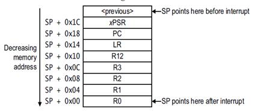
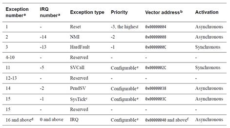
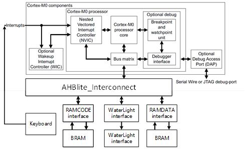

LAB4: 如何召唤"沉睡的软件"
在之前的内容, 我们介绍了 Cortex-M0 相关的异常与中断的处理过程. 本章以键盘模块实验为基础, 讲解 CPU 的中断处理以及使用 C 语言高效地编程. 现在我们简述中断的处理过程.
根据 ARMv6-M 架构参考手册以及 Cortex-M0 用户手册, CPU 中断处理过程如下:
- CPU 接收到中断信号(IRQ、NMI、Systick等等);
- 将 R0,R1,R2,R3,R12,LR,PC,xPSR 寄存器入栈, 如下图所示;
- 根据中断信号查找中断向量表(对应汇编启动代码中的__Vector段), 跳转至中断处理函数;
- 中断处理函数执行完成后, 利用链接寄存器返回, 寄存器出栈, PC 跳转.

异常中断向量表如下图所示.

本章实现如下图所示的 SoC . 利用开发板上面的矩阵键盘最下方的 4 个按键, 通过上升沿触发 Cortex-M0 的 IRQ 中断. 然后处理器在中断服务程序中, 控制硬件流水灯以不同模式运行. 在本章扩展部分, 将介绍如何利用矩阵键盘的全部 16 个按键实现更加复杂的终端控制功能.
